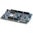
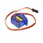
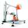

Things used in this project
Hardware components |
|
|  | Nordic Semiconductor nRF52 Development Kit |

|
PCBWay Custom PCB |
|  | SG90 Micro-servo motor |
| Connector Header Through Hole, Right Angle 0.100" (2.54mm) | |
| Female/Female Jumper Wires | |
| Screw M3 | |
| Nut M3 | |
| Switch SS12D00 | |
| Gesture Sensor APDS-9960 | |
| M2 Screw | |
Software apps and online services |
|

|
Arduino IDE |

|
Nordic Semiconductor nRF Connect SDK |
| Siemens SolidWorks | |
| BambuStudio | |
Hand tools and fabrication machines |
|

|
Soldering iron (generic) |

|
Solder Wire, Lead Free |
|  | 3D Printer (generic) |
Story
Introduction
eReaders have revolutionized the way we consume books, offering a convenient alternative to traditional books. With their lightweight design and vast storage capacity, eReaders allow users to carry thousands of books on a single device, making reading more accessible and portable than ever before.
However, for individuals with mobility impairments, eReaders can present certain challenges . These devices typically require precise finger movements to physically tap or swipe specific areas of the screen to turn pages . This can be difficult for those with limited mobility in their arms or hands , making it harder for them to fully enjoy the benefits of digital reading.

Solution:
To address the obstacles that people with mobility impairments face when using eReaders, one potential solution is to equip eReaders with motion detection technology . This would allow users to navigate through the device without needing to tap or swipe the screen precisely. For example, simple hand or arm movements to the right or left could be detected by the device to turn pages forward or backward in the eReader.
While some devices already offer the ability to turn pages using a remote control, these typically work only with eBooks that have capacitive screens (like those found on smartphones or tablets) and are not compatible with older models or those without a touchscreen.
How it Works:
The eReader is attached to the electronics using a stand, which allows it to be easily detached for tasks such as charging, adding books, or adjusting settings like font size.

Once the eReader is placed on the 3D-printed stand and the back switch is turned on (to use the Li-Po battery) or a cable is connected to the USB port, the gesture sensor will detect movements to the right or left, activating the servos to turn the page forward or backward.
This device is designed for the Kindle 8th generation, which features an infrared touchscreen. which makes current market devices incompatible with this ebook . If the user has a different model of eReader, the CAD file for the stand can be easily modified to fit the new size.
Additionally, the length of the servo arms must be adjusted to reach the correct position on the screen of the new device.
Note: If the user has a device with a capacitive screen, it is necessary to add a wire connected to GND to both servo arms.
Hardware:
The project is based on two main components:
- Infrared Gesture Sensor APDS-9960.
- Two MG90S Servomotors .
APDS-9960: The gesture detection sensor utilizes four directional photodiodes to sense reflected IR energy (sourced by the integrated LED) to convert physical motion information (i.e. velocity, direction and distance) to a digital information ,
Then the gesture engine accommodates a wide range of mobile device gesturing requirements: simple UP-DOWN-RIGHT-LEFT gestures or more complex gestures can be accurately sensed.
Example: LEFT Motion: When a hand is swiped from right to left across the four photodiodes and the IR LED, the hand will first pass over the R (right) photodiode, then U (up) and D (down), and finally L (left).
The sensing algorithm recognizes the increase in signal at the R photodiode and records a timestamp for this rise. It then detects similar signal increases at the U and D photodiodes, followed by L, with each signal rise recorded at progressively later timestamps.
The algorithm also detects when each photodiode returns to its normal, no-detection state, recording timestamps for these events as well. First, L returns to normal, followed by U and D, and finally R.
At the end of the process, the result is four 8-bit gesture values corresponding to the accumulated signal strength at each photodiode.
MG90S Servomotor: Once the gesture (LEFT or RIGHT) is detected, the corresponding servo motor is activated (R Servo for a RIGHT gesture and L Servo for a LEFT gesture). A servo motor is a DC motor that controls rotation by adjusting the length of a square wave pulse sent to its control circuit. The length of each pulse is defined by Pulse Width Modulation (PWM).
The pulse train is characterized by its duty cycle, which is the ratio of the pulse duration (time the signal is in the "on" state) to the total period of the signal. For example, a classic square wave has a 50% duty cycle, meaning the "on" time (pulse) occupies half of the wave's period, with the other half being "off."
By varying the duty cycle of the PWM signal, the angle of the servo motor's rotation can be controlled . Starting with a duty cycle of 1%, which corresponds to a 0° angle, increasing the duty cycle increases the rotation angle. At a 50% duty cycle, the motor's pin positions itself at 90°. A duty cycle of 99% results in a rotation of 180°.
Build Instructions
1. 3D Printing and Soldering:
- Print the 3D parts with a layer height of 0.3 mm and 15% infill. This combination should provide a sturdy build and ensure a good fit between the pieces.
- Solder a 5x 2.54mm pin header to the Gesture Sensor APDS-9960 ( the "VL" port is unused ).
- Solder the components to the custom PCB, including the switch and pin headers.
- Solder a 2x 2.54mm pin header to the nRF52840-DK for connecting the battery cables.
2. Attach the Components to the Case:
- Glue the Case Pieces: Glue together the two parts of the case (Back.stl and Front.stl). The case is divided into these two pieces to eliminate the need for supports during printing.
- Attach the Servos and Gesture Sensor: Secure the servos to the case using M2x8 mm screws (2 per servo, 4 in total) and attach the gesture sensor with two M3x10 mm screws and two M3 nuts.
- Mount the nRF52840-DK: Position the nRF52840-DK with the nRF Power Source in the VDD position and secure it to the case with four M3x5 mm screws. Install the nRF52840-DK before attaching the PCB shield on top.
- Attach the PCB Shield: Mount the PCB shield onto the nRF52840-DK board and connect the servos and the gesture sensor to the PCB shield, making sure not to connect the "VL" pin from the gesture sensor.
3. Connect the battery:
- Attach the Battery: Connect the Li-Po battery ( maximum 5V ) to the bottom port, ensuring that the positive terminal is connected to the "+" input.
- Install the Switch Cover: Place the 3D-printed switch cover onto the power switch.
- Secure the Casing: Cover the battery and PCB with the protective casing using three M3x30 mm screws.
4. Stand Build: The stand is assembled using two parts: a base and an angled piece (Stand 1/2 and Stand 2/2). These parts are combined to position the eBook at a comfortable angle for use. Secure the two pieces together with two M3x10 mm screws and two M3 nuts.
5. Arm Attachment: Connect the 3D Printed TPU arms to the servos, use a M2x10mm screw, make sure to place them at 90 degrees with a slight inward tilt.
6. Finish Build: Place the eBook in the stand. By turning on the back switch, t he device will respond to RIGHT/LEFT gestures and turn the pages forward or backward.
Programming the Board
Usually, you would need to use the nRF Studio Extension for VSCode, which can be complicated for beginners or too complex if you have to use external libraries. However, there is a way to program it using the Arduino IDE:
1. Install the latest version of n RF Connect and Arduino IDE.
2. Install the Adafruit nRF52 Board Package Using the Boards Manager.
3. Go to Arduino15\packages\adafruit\hardware\nrf52\variants\feather_nrf52832.
4. Change the variant.cpp /.h for custom the ones ( see the attachments ).
Uploading the Code
Follow these steps to upload your code to the board:
1. Erase the memory of the board using the nRF Connect -> Programmer.
2. Burn the bootloader to the board (c lose the Serial Port during this step and don't disconnect your board ) using the Adafruit Feather nRF52832 Board.
3. Upload your code to the board and when finish the program will start running.
Note: If the process fails, try repeating the steps, ensuring the memory is fully erased, and switching between available ports (e.g., COM3 and COM4) if necessary.
Future Development:
This project has introduced the first prototype of a device designed to assist users with arm or hand impairments in turning eBook pages effortlessly. Future upgrades to the eBook Page Turner may include:
1.Charging Port for Li-Po Battery: Currently, the battery must be charged externally. Future iterations could incorporate a USB-C port for recharging.
2. More Complex Functions: The current device only supports basic functions such as turning pages forward or backward. Future versions could explore adding more complex functions, like adjusting font size or switching books. However, this would require accommodating the various swipe or touch combinations needed for different eBook systems.
3. Alternative Detection Methods: Expanding input options through face gesture recognition or voice commands could provide additional ways for users to interact with the device, enhancing its functionality for turning pages.